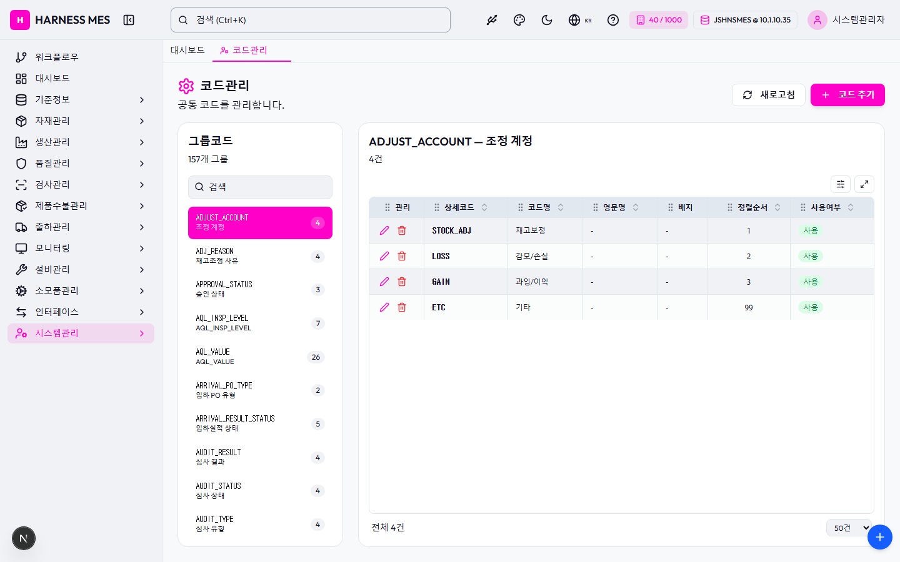

Route: /master/code
Status: PASS / HTTP 200
| 기능/버튼 | 처리 방식 | 상태 | 비고 |
|---|---|---|---|
| 화면 로드 | GET /master/code | 실행 | HTTP 200 |
| 라우트 prewarm | 직접 HTTP 확인 | 실행 | HTTP 200, 164ms |
| 초기 API 호출 | 브라우저 네트워크 수집 | 실행 | 11건 |
| 🇰🇷 | 화면 버튼 목록화 | 목록화 | 후속 메뉴별 세부 시나리오 실행 대상 |
| 시스템관리자 | 화면 버튼 목록화 | 목록화 | 후속 메뉴별 세부 시나리오 실행 대상 |
| 워크플로우 | 화면 버튼 목록화 | 목록화 | 후속 메뉴별 세부 시나리오 실행 대상 |
| 대시보드 | 화면 버튼 목록화 | 목록화 | 후속 메뉴별 세부 시나리오 실행 대상 |
| 기준정보 | 화면 버튼 목록화 | 목록화 | 후속 메뉴별 세부 시나리오 실행 대상 |
| 자재관리 | 화면 버튼 목록화 | 목록화 | 후속 메뉴별 세부 시나리오 실행 대상 |
| 생산관리 | 화면 버튼 목록화 | 목록화 | 후속 메뉴별 세부 시나리오 실행 대상 |
| 품질관리 | 화면 버튼 목록화 | 목록화 | 후속 메뉴별 세부 시나리오 실행 대상 |
| 검사관리 | 화면 버튼 목록화 | 목록화 | 후속 메뉴별 세부 시나리오 실행 대상 |
| 제품수불관리 | 화면 버튼 목록화 | 목록화 | 후속 메뉴별 세부 시나리오 실행 대상 |
| 출하관리 | 화면 버튼 목록화 | 목록화 | 후속 메뉴별 세부 시나리오 실행 대상 |
| 모니터링 | 화면 버튼 목록화 | 목록화 | 후속 메뉴별 세부 시나리오 실행 대상 |
| 설비관리 | 화면 버튼 목록화 | 목록화 | 후속 메뉴별 세부 시나리오 실행 대상 |
| 소모품관리 | 화면 버튼 목록화 | 목록화 | 후속 메뉴별 세부 시나리오 실행 대상 |
| 인터페이스 | 화면 버튼 목록화 | 목록화 | 후속 메뉴별 세부 시나리오 실행 대상 |
| 시스템관리 | 화면 버튼 목록화 | 목록화 | 후속 메뉴별 세부 시나리오 실행 대상 |
| 코드관리 | 화면 버튼 목록화 | 목록화 | 후속 메뉴별 세부 시나리오 실행 대상 |
| 새로고침 | 화면 버튼 목록화 | 목록화 | 후속 메뉴별 세부 시나리오 실행 대상 |
| 코드 추가 | 화면 버튼 목록화 | 목록화 | 후속 메뉴별 세부 시나리오 실행 대상 |
| ADJUST_ACCOUNT 조정 계정 4 | 화면 버튼 목록화 | 목록화 | 후속 메뉴별 세부 시나리오 실행 대상 |
| ADJ_REASON 재고조정 사유 4 | 화면 버튼 목록화 | 목록화 | 후속 메뉴별 세부 시나리오 실행 대상 |
| APPROVAL_STATUS 승인 상태 3 | 화면 버튼 목록화 | 목록화 | 후속 메뉴별 세부 시나리오 실행 대상 |
| AQL_INSP_LEVEL AQL_INSP_LEVEL 7 | 화면 버튼 목록화 | 목록화 | 후속 메뉴별 세부 시나리오 실행 대상 |
| AQL_VALUE AQL_VALUE 26 | 화면 버튼 목록화 | 목록화 | 후속 메뉴별 세부 시나리오 실행 대상 |
| ARRIVAL_PO_TYPE 입하 PO 유형 2 | 화면 버튼 목록화 | 목록화 | 후속 메뉴별 세부 시나리오 실행 대상 |
| ARRIVAL_RESULT_STATUS 입하실적 상태 5 | 화면 버튼 목록화 | 목록화 | 후속 메뉴별 세부 시나리오 실행 대상 |
| AUDIT_RESULT 심사 결과 4 | 화면 버튼 목록화 | 목록화 | 후속 메뉴별 세부 시나리오 실행 대상 |
| AUDIT_STATUS 심사 상태 4 | 화면 버튼 목록화 | 목록화 | 후속 메뉴별 세부 시나리오 실행 대상 |
| AUDIT_TYPE 심사 유형 4 | 화면 버튼 목록화 | 목록화 | 후속 메뉴별 세부 시나리오 실행 대상 |
| BAUD_RATE 보드레이트 5 | 화면 버튼 목록화 | 목록화 | 후속 메뉴별 세부 시나리오 실행 대상 |
| BOM_SIDE BOM 사이드 3 | 화면 버튼 목록화 | 목록화 | 후속 메뉴별 세부 시나리오 실행 대상 |
| BOM_TYPE BOM 유형 3 | 화면 버튼 목록화 | 목록화 | 후속 메뉴별 세부 시나리오 실행 대상 |
| BOX_STATUS BOX 상태 3 | 화면 버튼 목록화 | 목록화 | 후속 메뉴별 세부 시나리오 실행 대상 |
| CAL_RESULT CAL_RESULT 3 | 화면 버튼 목록화 | 목록화 | 후속 메뉴별 세부 시나리오 실행 대상 |
| CAL_TYPE CAL_TYPE 2 | 화면 버튼 목록화 | 목록화 | 후속 메뉴별 세부 시나리오 실행 대상 |
| CAPA_ACTION_STATUS CAPA_ACTION_STATUS 3 | 화면 버튼 목록화 | 목록화 | 후속 메뉴별 세부 시나리오 실행 대상 |
| CAPA_SOURCE_TYPE CAPA_SOURCE_TYPE 4 | 화면 버튼 목록화 | 목록화 | 후속 메뉴별 세부 시나리오 실행 대상 |
| CAPA_STATUS CAPA_STATUS 6 | 화면 버튼 목록화 | 목록화 | 후속 메뉴별 세부 시나리오 실행 대상 |
| CAPA_TYPE CAPA_TYPE 2 | 화면 버튼 목록화 | 목록화 | 후속 메뉴별 세부 시나리오 실행 대상 |
| CHANGE_PRIORITY CHANGE_PRIORITY 3 | 화면 버튼 목록화 | 목록화 | 후속 메뉴별 세부 시나리오 실행 대상 |
| CHANGE_STATUS CHANGE_STATUS 8 | 화면 버튼 목록화 | 목록화 | 후속 메뉴별 세부 시나리오 실행 대상 |
| CHANGE_TYPE CHANGE_TYPE 4 | 화면 버튼 목록화 | 목록화 | 후속 메뉴별 세부 시나리오 실행 대상 |
| COMM_TYPE 통신 유형 5 | 화면 버튼 목록화 | 목록화 | 후속 메뉴별 세부 시나리오 실행 대상 |
| COMPLAINT_STATUS COMPLAINT_STATUS 5 | 화면 버튼 목록화 | 목록화 | 후속 메뉴별 세부 시나리오 실행 대상 |
| COMPLAINT_TYPE COMPLAINT_TYPE 3 | 화면 버튼 목록화 | 목록화 | 후속 메뉴별 세부 시나리오 실행 대상 |
| COMPLAINT_URGENCY COMPLAINT_URGENCY 4 | 화면 버튼 목록화 | 목록화 | 후속 메뉴별 세부 시나리오 실행 대상 |
| CONNECTION_STATUS 연결 상태 3 | 화면 버튼 목록화 | 목록화 | 후속 메뉴별 세부 시나리오 실행 대상 |
| CONSUMABLE_CATEGORY 소모품 카테고리 3 | 화면 버튼 목록화 | 목록화 | 후속 메뉴별 세부 시나리오 실행 대상 |
| CONSUMABLE_LIFE_STATUS 소모품 수명 상태 3 | 화면 버튼 목록화 | 목록화 | 후속 메뉴별 세부 시나리오 실행 대상 |
| CONSUMABLE_LOG_TYPE 소모품 이력 유형 4 | 화면 버튼 목록화 | 목록화 | 후속 메뉴별 세부 시나리오 실행 대상 |
| CONSUMABLE_LOG_TYPE_GROUP 소모품 이력 그룹 2 | 화면 버튼 목록화 | 목록화 | 후속 메뉴별 세부 시나리오 실행 대상 |
| CONSUMABLE_OPER_STATUS CONSUMABLE_OPER_STATUS 3 | 화면 버튼 목록화 | 목록화 | 후속 메뉴별 세부 시나리오 실행 대상 |
| CONSUMABLE_STATUS 소모품 상태 3 | 화면 버튼 목록화 | 목록화 | 후속 메뉴별 세부 시나리오 실행 대상 |
| CONTINUITY_DEFECT 통전검사 불량 유형 7 | 화면 버튼 목록화 | 목록화 | 후속 메뉴별 세부 시나리오 실행 대상 |
| CONTROL_METHOD 관리 방법 7 | 화면 버튼 목록화 | 목록화 | 후속 메뉴별 세부 시나리오 실행 대상 |
| CON_STOCK_STATUS 소모품 재고 상태 5 | 화면 버튼 목록화 | 목록화 | 후속 메뉴별 세부 시나리오 실행 대상 |
| CP_PHASE CP_PHASE 3 | 화면 버튼 목록화 | 목록화 | 후속 메뉴별 세부 시나리오 실행 대상 |
| CP_STATUS CP_STATUS 4 | 화면 버튼 목록화 | 목록화 | 후속 메뉴별 세부 시나리오 실행 대상 |
| CUSTOMS_ENTRY_STATUS 통관 입항 상태 3 | 화면 버튼 목록화 | 목록화 | 후속 메뉴별 세부 시나리오 실행 대상 |
| CUSTOMS_LOT_STATUS 통관 LOT 상태 3 | 화면 버튼 목록화 | 목록화 | 후속 메뉴별 세부 시나리오 실행 대상 |
| DATA_BITS 데이터비트 2 | 화면 버튼 목록화 | 목록화 | 후속 메뉴별 세부 시나리오 실행 대상 |
| DAY_OFF_TYPE 휴무 유형 5 | 화면 버튼 목록화 | 목록화 | 후속 메뉴별 세부 시나리오 실행 대상 |
| DEFECT_CAUSE 불량 원인 1 | 화면 버튼 목록화 | 목록화 | 후속 메뉴별 세부 시나리오 실행 대상 |
| DEFECT_DISPOSITION 불량 처리 유형 4 | 화면 버튼 목록화 | 목록화 | 후속 메뉴별 세부 시나리오 실행 대상 |
| DEFECT_GENUINE 진성불량 여부 2 | 화면 버튼 목록화 | 목록화 | 후속 메뉴별 세부 시나리오 실행 대상 |
| DEFECT_GRADE DEFECT_GRADE 3 | 화면 버튼 목록화 | 목록화 | 후속 메뉴별 세부 시나리오 실행 대상 |
| DEFECT_LOG_STATUS 불량 로그 상태 5 | 화면 버튼 목록화 | 목록화 | 후속 메뉴별 세부 시나리오 실행 대상 |
| DEFECT_MODEL_GROUP DEFECT_MODEL_GROUP 2 | 화면 버튼 목록화 | 목록화 | 후속 메뉴별 세부 시나리오 실행 대상 |
| DEFECT_POSITION 불량 위치 1 | 화면 버튼 목록화 | 목록화 | 후속 메뉴별 세부 시나리오 실행 대상 |
| DEFECT_STATUS 불량 상태 4 | 화면 버튼 목록화 | 목록화 | 후속 메뉴별 세부 시나리오 실행 대상 |
| DEFECT_TYPE 불량 유형 12 | 화면 버튼 목록화 | 목록화 | 후속 메뉴별 세부 시나리오 실행 대상 |
| DOC_STATUS DOC_STATUS 4 | 화면 버튼 목록화 | 목록화 | 후속 메뉴별 세부 시나리오 실행 대상 |
| DOC_TYPE DOC_TYPE 6 | 화면 버튼 목록화 | 목록화 | 후속 메뉴별 세부 시나리오 실행 대상 |
| EQUIP_STATUS 설비 상태 4 | 화면 버튼 목록화 | 목록화 | 후속 메뉴별 세부 시나리오 실행 대상 |
| 입력 필드 | DOM 수집 | 목록화 | 2개 |
| 선택 필드 | DOM 수집 | 목록화 | 1개 |
| 목록/그리드 | DOM 수집 | 목록화 | table 1, grid 0 |
| Method | URL | Status | OK |
|---|---|---|---|
| GET | /api/health | 200 | OK |
| GET | /api/db-info | 200 | OK |
| GET | /api/health | 200 | OK |
| GET | /api/db-info | 200 | OK |
| GET | /api/system/comm-configs?commType=SERIAL&useYn=Y | 200 | OK |
| GET | /api/auth/me | 200 | OK |
| GET | /api/system/configs/active | 200 | OK |
| GET | /api/menu-categories/tree | 200 | OK |
| GET | /api/master/com-codes/groups | 200 | OK |
| GET | /api/master/com-codes/all-active | 200 | OK |
| GET | /api/master/com-codes/groups/ADJUST_ACCOUNT | 200 | OK |
requestfailed: GET /api/db-info net::ERR_ABORTED requestfailed: GET https://fonts.gstatic.com/s/outfit/v15/QGYvz_MVcBeNP4NJtEtq.woff2 net::ERR_ABORTED

H HARNESS MES 🇰🇷 40 / 1000 JSHNSMES @ 10.1.10.35 시스템관리자 워크플로우 대시보드 기준정보 자재관리 생산관리 품질관리 검사관리 제품수불관리 출하관리 모니터링 설비관리 소모품관리 인터페이스 시스템관리 대시보드 코드관리 코드관리 공통 코드를 관리합니다. 새로고침 코드 추가 그룹코드 157개 그룹 ADJUST_ACCOUNT 조정 계정 4 ADJ_REASON 재고조정 사유 4 APPROVAL_STATUS 승인 상태 3 AQL_INSP_LEVEL AQL_INSP_LEVEL 7 AQL_VALUE AQL_VALUE 26 ARRIVAL_PO_TYPE 입하 PO 유형 2 ARRIVAL_RESULT_STATUS 입하실적 상태 5 AUDIT_RESULT 심사 결과 4 AUDIT_STATUS 심사 상태 4 AUDIT_TYPE 심사 유형 4 BAUD_RATE 보드레이트 5 BOM_SIDE BOM 사이드 3 BOM_TYPE BOM 유형 3 BOX_STATUS BOX 상태 3 CAL_RESULT CAL_RESULT 3 CAL_TYPE CAL_TYPE 2 CAPA_ACTION_STATUS CAPA_ACTION_STATUS 3 CAPA_SOURCE_TYPE CAPA_SOURCE_TYPE 4 CAPA_STATUS CAPA_STATUS 6 CAPA_TYPE CAPA_TYPE 2 CHANGE_PRIORITY CHANGE_PRIORITY 3 CHANGE_STATUS CHANGE_STATUS 8 CHANGE_TYPE CHANGE_TYPE 4 COMM_TYPE 통신 유형 5 COMPLAINT_STATUS COMPLAINT_STATUS 5 COMPLAINT_TYPE COMPLAINT_TYPE 3 COMPLAINT_URGENCY COMPLAINT_URGENCY 4 CONNECTION_STATUS 연결 상태 3 CONSUMABLE_CATEGORY 소모품 카테고리 3 CONSUMABLE_LIFE_STATUS 소모품 수명 상태 3 CONSUMABLE_LOG_TYPE 소모품 이력 유형 4 CONSUMABLE_LOG_TYPE_GROUP 소모품 이력 그룹 2 CONSUMABLE_OPER_STATUS CONSUMABLE_OPER_STATUS 3 CONSUMABLE_STATUS 소모품 상태 3 CONTINUITY_DEFECT 통전검사 불량 유형 7 CONTROL_METHOD 관리 방법 7 CON_STOCK_STATUS 소모품 재